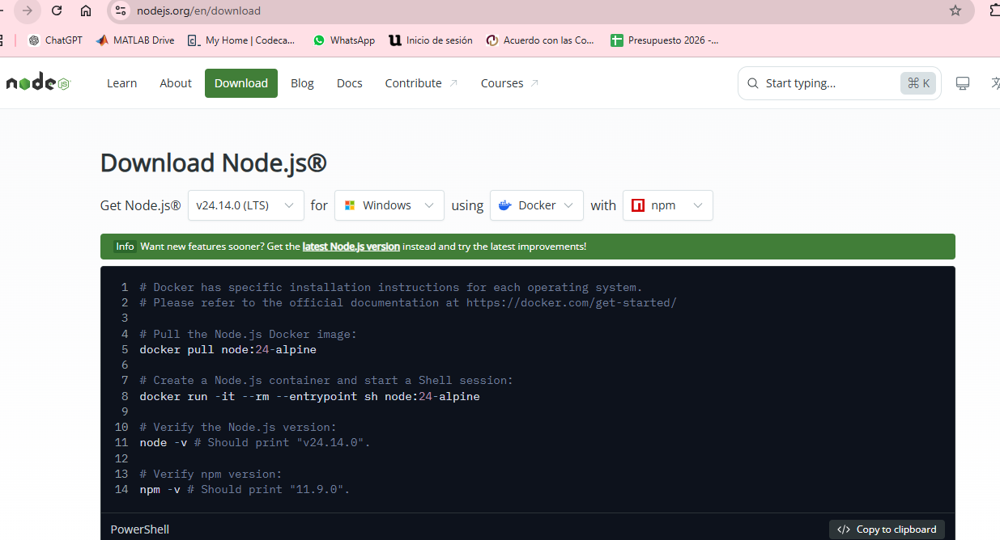
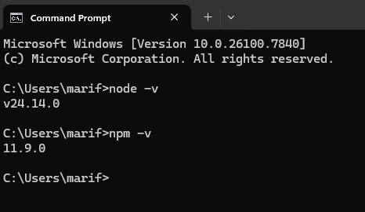
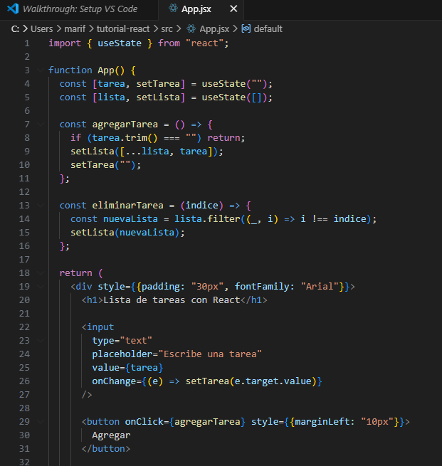

Guía paso a paso para crear una aplicación con React
Introducción
En el desarrollo web moderno existen diferentes herramientas que permiten crear interfaces dinámicas e interactivas. Una de las tecnologías más utilizadas actualmente es React, una biblioteca de JavaScript desarrollada por Meta que permite construir aplicaciones web mediante componentes reutilizables.
React facilita la creación de interfaces complejas al dividir la aplicación en pequeñas partes llamadas componentes, lo que mejora la organización del código y facilita su mantenimiento.
En este tutorial se explica paso a paso cómo instalar las herramientas necesarias para trabajar con React, cómo crear un proyecto utilizando Vite y cómo desarrollar una aplicación sencilla. Como ejemplo práctico se desarrollará una aplicación de lista de tareas que permite agregar y eliminar elementos.
El objetivo de este tutorial es proporcionar una guía clara para comprender los pasos básicos necesarios para comenzar a desarrollar aplicaciones con React.
Objetivo del tutorial
El objetivo de este tutorial es explicar paso a paso cómo comenzar a trabajar con React, desde la instalación del entorno de desarrollo hasta la creación de una pequeña aplicación funcional.
A lo largo del tutorial se describen los pasos necesarios para instalar Node.js, crear un proyecto utilizando Vite, comprender la estructura básica de un proyecto React y modificar los archivos principales de la aplicación.
Como ejemplo práctico se desarrolla una aplicación sencilla de lista de tareas que permite agregar y eliminar elementos. Este ejemplo permite comprender cómo funcionan los componentes de React y cómo se pueden crear interfaces interactivas utilizando JavaScript.
Justificación del framework
¿Para qué sirve React?
React es una biblioteca de JavaScript utilizada para construir interfaces de usuario interactivas. Permite desarrollar aplicaciones web modernas mediante componentes reutilizables, lo que facilita la organización del código y el mantenimiento de los proyectos.
¿Qué aplicaciones tiene?
React se utiliza en una gran variedad de aplicaciones web modernas, como:
Paneles administrativos
Redes sociales
Sistemas de gestión
Aplicaciones de comercio electrónico
Interfaces interactivas
¿Sobre qué lenguajes se apoya?
React utiliza principalmente:
JavaScript
HTML
CSS
También utiliza JSX, que permite escribir código similar a HTML dentro de JavaScript.
¿Qué prerrequisitos necesita?
Para trabajar con React se necesitan:
Node.js instalado
npm (gestor de paquetes)
Un editor de código como Visual Studio Code
Conocimientos básicos de HTML, CSS y JavaScript
Herramientas utilizadas
Para desarrollar este proyecto se utilizaron varias herramientas que permiten crear aplicaciones web modernas utilizando React.
Node.js: entorno de ejecución que permite ejecutar JavaScript fuera del navegador y utilizar herramientas como npm.
npm: gestor de paquetes que permite instalar dependencias necesarias para el proyecto.
Vite: herramienta que facilita la creación y ejecución de proyectos React de forma rápida y sencilla.
React: biblioteca de JavaScript utilizada para construir interfaces de usuario mediante componentes reutilizables.
Visual Studio Code: editor de código utilizado para escribir y modificar los archivos del proyecto.
Instalación
Para comenzar a trabajar con React es necesario instalar Node.js y contar con un editor de código, preferentemente Visual Studio Code. Node.js permite ejecutar JavaScript fuera del navegador y utilizar npm para instalar las dependencias necesarias del proyecto.
Paso 1: Descargar Node.js
Se accede a la página oficial de Node.js y se descarga la versión LTS recomendada para el sistema operativo.

Paso 2: Verificación de la instalación
Una vez finalizada la instalación, es necesario verificar que Node.js y npm se hayan instalado correctamente.
Para ello se abre la terminal del sistema (CMD) y se ejecutan los siguientes comandos:
node -v
npm -v

Estos comandos muestran las versiones instaladas de Node.js y npm. Si aparecen números de versión, significa que la instalación se realizó correctamente.
El objetivo de estos primeros pasos no es crear la aplicación todavía, sino asegurarnos de que el entorno de desarrollo está preparado para trabajar con React.
Paso 3: Creación del proyecto React
En la misma terminal (CMD) se ejecuta el siguiente comando:
npm create vite@latest
Este comando crea un nuevo proyecto utilizando Vite. Durante el proceso de configuración se selecciona el framework React y la variante JavaScript.
Durante la configuración aparecerán varias opciones, pero en este caso se seleccionaron las siguientes:
Nombre del proyecto: tutorial-react
Framework: React
Variant: JavaScript
Después de crear el proyecto es necesario entrar a la carpeta generada ejecutando el siguiente comando:
cd tutorial-react
Luego se instalan las dependencias necesarias del proyecto:
npm install
Finalmente se ejecuta la aplicación con el siguiente comando:
npm run dev
La terminal mostrará una dirección similar a la siguiente:
Local: http://localhost:5173/
Copiamos esta dirección en el navegador y, si todos los pasos se realizaron correctamente, podremos ver la primera aplicación de React funcionando.
En esta pantalla inicial se puede observar el logo de React, el logo de Vite y un botón contador.
Primera Aplicación
Ahora se abre el proyecto en Visual Studio Code para comenzar a modificar el código.
Para hacerlo se realizan los siguientes pasos:
Abrir Visual Studio Code.
Seleccionar File → Open Folder.
Buscar la carpeta tutorial-react.
Abrir la carpeta.
Dentro de la carpeta src se encuentran los archivos principales del proyecto:
App.jsx
main.jsx
index.css
Se abre el archivo src/App.jsx, se elimina el código inicial y se reemplaza por un ejemplo sencillo de "Hola Mundo".
Hola Mundo
Después de guardar los cambios, el navegador se actualiza automáticamente y se muestra el mensaje en pantalla.
Aplicación de ejemplo: Lista de tareas
Como ejemplo práctico se desarrolló una aplicación sencilla de lista de tareas. Esta aplicación permite al usuario escribir una tarea, agregarla a una lista y eliminarla cuando ya no sea necesaria.
Para ello se modificó nuevamente el archivo App.jsx, eliminando el código del "Hola Mundo" y agregando el nuevo código de la aplicación.

Después de guardar los cambios, la aplicación se actualiza automáticamente en el navegador.
El resultado es una interfaz donde el usuario puede escribir tareas, agregarlas a la lista y eliminarlas mediante un botón.
Conclusiones
React es una herramienta muy útil para el desarrollo de aplicaciones web modernas. Gracias al uso de componentes y al manejo del estado es posible crear interfaces dinámicas de manera organizada y eficiente.
A través de este tutorial se aprendió a preparar el entorno de desarrollo, instalar las herramientas necesarias, crear un proyecto con React y desarrollar una aplicación funcional.
Además, se pudo comprender la estructura básica de un proyecto React y cómo los componentes permiten construir aplicaciones de forma modular y reutilizable.